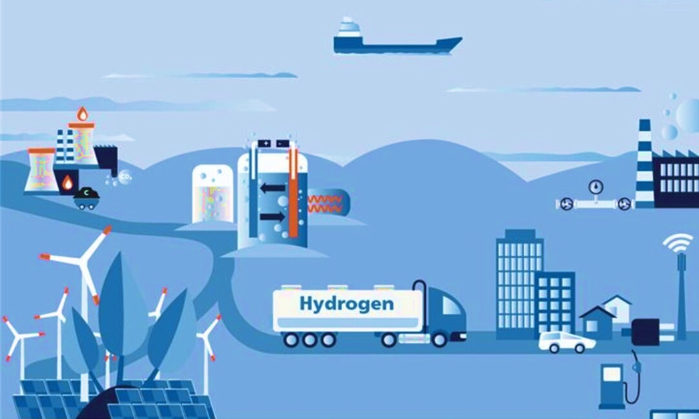

▤
15
papers
”
539
citations
⚒
5
patents
✎
55
peer reviews
▰
3
students mentored
▣
6
research grants
⇩
660
PhD thesis downloads
◉
41
countries visited
Research Areas

可再生能源 & 可持续发展
从钻木取火到新能源汽车，能源革命一直是推动人类生产力飞速发展的关键动力。随着化石能源短缺及环境负面影响，可再生能源被视为应对全球气候变化挑战的核心解决方案。
News
参加萨尔茨堡-KFAS全球研讨会
萨尔茨堡，奥地利
围绕能源转型与全球合作进行交流。
担任联合国欧洲经济委员会专家组成员
日内瓦，瑞士
参与交通、气候与能源政策讨论。
任职瑞士圣加仑经济论坛学术评审
圣加仑，瑞士
参与青年领袖与全球议题评审。
代表论文
Temperature dependent water transport mechanism in PEFC gas diffusion layers revealed by subsecond operando X-ray tomographic microscopy
Journal of Power Sources · 2021
H. Xu, S. Nagashima, H. Nguyen, K. Kishita, F. Marone, F. N. Buechi, J. Eller
查看论文
Subsecond Operando X-ray Tomographic Microscopy of Liquid Water in Polymer Electrolyte Fuel Cells
PhD dissertation highlight · 2021
H. Xu, T. J. Schmidt, M. Stampanoni, J. Eller
查看论文
Effects of gas diffusion layer substrates on PEFC water management: Part I. Operando liquid water saturation and gas diffusion properties
Journal of The Electrochemical Society · 2021
H. Xu, M. Buehrer, F. Marone, T. J. Schmidt, F. N. Buechi, J. Eller
查看论文
专利
Two EU patents filed at EPO under non-disclosure
EU · 2025 · pending
Annular Gas-Liquid Interface Jig Magnetic Separator
CN · 2013 · granted
Continuously Annular Gas-Liquid Interface Jig Magnetic Separator
CN · 2013 · granted